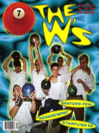

CMnexus
: Contemporary Christian culture, music, and media.
|
|
7ball, Nov / Dec 1998, #21
| Cover |
|---|
|  | | Writers in this Issue |
|---|
Haneline, Serena
Hassebroek, Ashley
Keyes, J. Edward
MacIntosh, Dan
Mattia, Nathan
Newcomb, Brian Quincy
P.R.E.Z.
Schlabach, Rachel
Tudor, Steve
Walker, Derek
Well, Chris
|
Cover Feature:
- "It's A Swing Thing" by Derek Walker
Article:
- Scaterd Few by Steve Tudor
- "The Starflyer Evolution" by J. Edward Keyes
- "The [Dance] Report" by P.R.E.Z.
Dance music and subgenres, with associated bands listed
Bankshots:Album Review:blah, blah, blah by Chris Well
This issue of 7ball came bundled with GAS #10. |
|